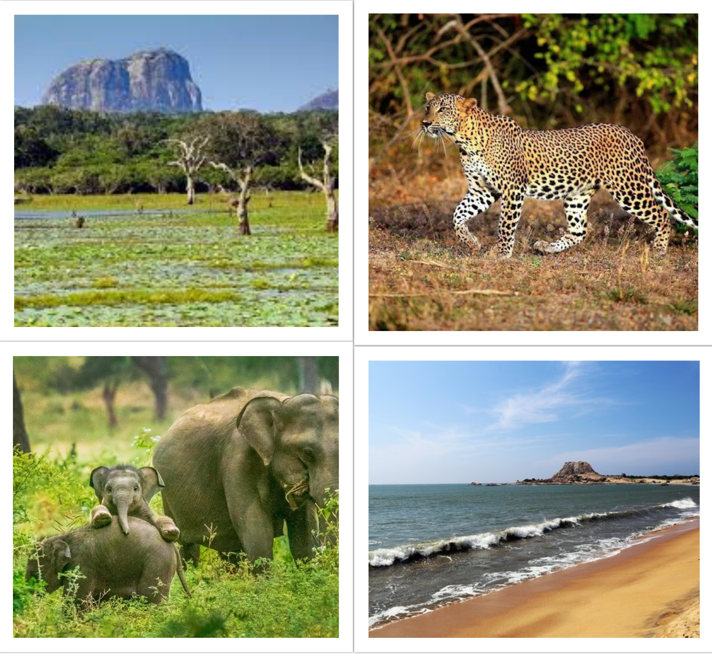
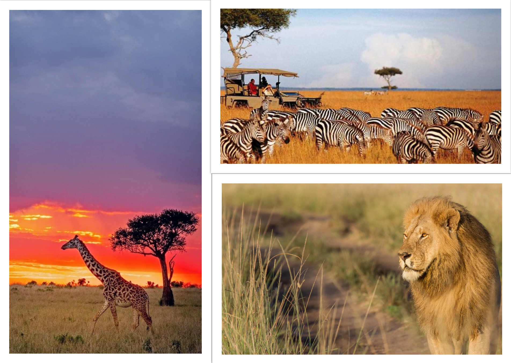

Yala National Park, Sri Lanka
Yala National Park in Sri Lanka is a photographer's paradise, boasting stunning landscapes and diverse wildlife. As one
of the country's premier wildlife destinations, Yala offers incredible opportunities to capture breathtaking shots of
elusive creatures such as leopards, elephants, and sloth bears in their natural habitat. The park's varied terrain,
including dense forests, grasslands, and coastal lagoons, provides a diverse backdrop for photography enthusiasts.
Whether you're an amateur photographer or a seasoned professional, Yala National Park offers endless possibilities for
capturing unforgettable moments in nature. From golden sunsets over the Indian Ocean to close-up encounters with
majestic wildlife, every corner of Yala presents a new and captivating scene waiting to be captured through the lens.
Plan your visit to Yala National Park for an unforgettable photography adventure in the heart of Sri Lanka's wilderness.

Masai Mara, Kenya
Masai Mara National Reserve in Kenya is a photographer's dream destination, renowned for its spectacular wildlife
sightings and stunning natural beauty. Located in the southwest part of the country, this vast savannah ecosystem is
home to an incredible diversity of wildlife, including the Big Five (lion, elephant, buffalo, leopard, and rhinoceros),
as well as cheetahs, hyenas, giraffes, zebras, and wildebeests. One of the most iconic events in Masai Mara is the
annual Great Migration, where millions of wildebeests and zebras cross the Mara River in search of greener pastures,
offering unparalleled photo opportunities. The reserve's expansive landscapes, dotted with acacia trees and dramatic
skies, provide the perfect backdrop for capturing striking images of Africa's wilderness. Whether you're capturing the
intense drama of a predator-prey interaction or the serene beauty of a Maasai tribesman against the savannah backdrop,
Masai Mara offers endless possibilities for photographers of all skill levels. Join a safari or set out on a self-drive
adventure to experience the magic of Masai Mara and capture unforgettable moments in the heart of the African
wilderness.

Kanha National Park, India
Kanha National Park, nestled in the heart of Madhya Pradesh, India, is a haven for wildlife enthusiasts and
photographers alike. This sprawling reserve is not only renowned for its population of majestic Bengal tigers but also
for its rich biodiversity, which includes leopards, sloth bears, Indian wild dogs, and an array of bird species. The
park's diverse landscapes, ranging from dense forests to vast grasslands and meandering streams, provide the perfect
canvas for capturing stunning images of India's natural beauty. Photographers can embark on thrilling safaris through
the park's core and buffer zones, accompanied by experienced guides who help navigate the terrain and spot elusive
wildlife. From the golden glow of sunrise over misty meadows to the soft hues of sunset painting the sky, Kanha offers
enchanting lighting conditions for capturing dramatic photographs. Whether you're a seasoned wildlife photographer or an
amateur enthusiast, Kanha National Park promises unforgettable encounters and unparalleled photo opportunities in the
heart of India's wilderness.